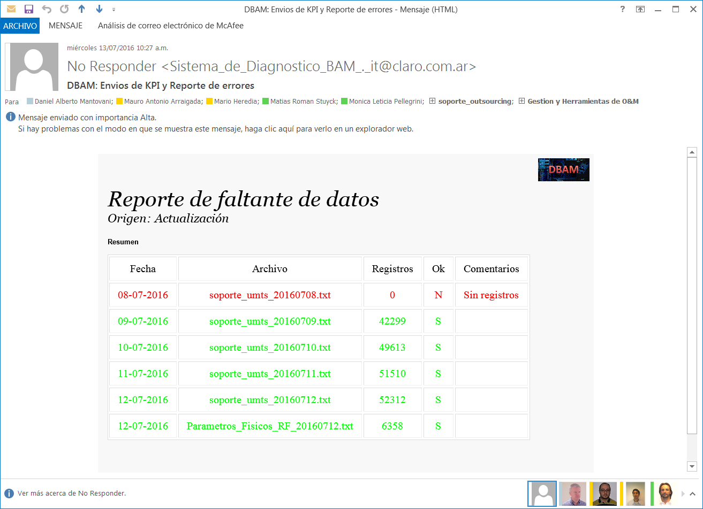

SOPORTE UMTS¶
1. OBJETIVO¶
El presente documento buscar explicar y detallar el proceso que genera el archivo Soporte UMTS
2. ALCANCE¶
Áreas involucradas: Performance de Red, procesos de operaciones y mantenimiento.
3. DEFINICIONES¶
- Smart: Base de datos Oracle donde se encuentran las tablas de datos para la red de acceso, incluido GSM y GPRS
- Perdido: Servidor UNIX en donde se aloja la base de datos Smart. El nombre es perdido.claro.amx y la dirección ip física es 10.92.50.83
4. DESCRIPCION GENERAL¶
El archivo de texto “Soporte Umts” se genera diariamente con un proceso Shell Script en el server Perdido, y toma como input la base de datos Smart. Es utilizado por las herramientas WdC (Web de Cobertura) y PRADERE.
El archivo contiene la siguiente información diaria sobre cada una de las radiobases de la red.
- Fecha: el archivo es generado con la fecha del día en que corre el proceso
- Wcell_id: sector de la radiobase umts
- Accesibilidad HSDPA
- Ce_available
- Atm_load
- Disponibilidad
- Confiabilidad
- Thrhoughput hsdpa macd

Nombre del proceso: soporte_umts_indicadores.sh
Path: /calidad/ps_spool/soporte/soporte_umts_indicadores.sh
Server: perdido.claro.amx
Frecuencia de ejecución: DIARIA
Input: KPIs de 3G de la base de datos Smart
Output: archivo TXT ubicado en /export/home/soporte/soporte_umts_yyyymmdd.txt
Mecanismos de Control: si el archivo no se es generado, se recibe un mail del cliente indicando el faltante de datos
5. MACRO FLUJO DEL PROCESO¶
6. DESCRIPCION DETALLADA¶
Ubicación del script en el CRONTAB:¶
# Procesos Spool 30 08 * * * /calidad/ps_spool/soporte/soporte_umts_indicadores.sh > /dev/null 2>&1 35 08 * * * /calidad/ps_spool/soporte/soporte_gsm_indicadores.sh > /dev/null 2>&1
Descripción del Shell Script: soporte_umts_indicadores.sh¶
- Este script ejecuta diferentes procesos SQL para obtener las últimas estadísticas de la red.
- Luego se ejecuta la función de confiabilidad de datos (f_check_confiabilidad_70_percent).
- Si la confiabilidad de datos es mayor al 70%, entonces:
- El archivo txt (soporte_umts_yyyymmdd.txt) es creado mediante un proceso SQL (soporte_umts_indicadores.sql).
- El archivo es movido al directorio final.
Shell Script soporte_umts_indicadores.sh¶
#!/usr/bin/ksh
# Declaracion de Funciones . /calidad/control/unix.sh . /calidad/control/include.sh . /calidad/control/variables.sh
# Variables de entorno Oracle export ORACLE_HOME=$oracleHome export ORACLE_SID=$oracleSid export ORACLE_TERM=$oracleTerm export PATH=$path
# Comentarios # Autor: Mario Heredia - 12.03.2010 # Actualizacion: Mario Heredia. Fecha: 18.01.2012. Motivo: Se saca del if a soporte_umts_parametros.sql # Actualizacion: Mario Heredia. Fecha: 13.08.2012. Motivo: Se agregaron 5 .sql para asegurar siempre la mayor confiabilidad.
# Declaracion de Variables DIA_DESDE=3 DIA_HASTA=1 FECHA_DESDE=`f_fecha $DIA_DESDE` FECHA_HASTA=`f_fecha $DIA_HASTA`
cd $workDirSpoolSoporte
rm *.txt
for i in f_CreateWindowDays $FECHA_DESDE $FECHA_HASTA do
# sqlplus -S / @ ${workDirUmtsHourly}/iu/umts_c_nsn_iu_hour_au6.sql $i 00 $i 23
sqlplus -S / @ ${workDirUmtsDaily}/iub/umts_c_nsn_iub_bh.sql $i $i
sqlplus -S / @ ${workDirUmtsDaily}/service/aux_umts_c_nsn_wcell_bh.sql $i $i hsdpa
sqlplus -S / @ ${workDirUmtsDaily}/hsdpa/umts_c_nsn_hsdpa_wcell_bh.sql $i $i
sqlplus -S / @ ${workDirUmtsDaily}/hsdpa/umts_nsn_hsdpa_wcell.sql $i $i BH
sqlplus -S / @ soporte_umts_indicadores_wcel_bh.sql $i $i
if [ f_check_confiabilidad_70_percent $i = ‘S’ ]; then
file=”soporte_umts_`f_fecha_soporte $i`.txt”
sqlplus -S / @ soporte_umts_indicadores.sql $i $file
mv $file $workDirSpoolStorageSoporte
fi
fil2=”Parametros_Fisicos_RF_`f_fecha_soporte $i`.txt”
sqlplus -S / @ soporte_umts_parametros.sql $i $fil2
mv $fil2 $workDirSpoolStorageSoporte
done
Proceso SQL soporte_umts_indicadores.sql¶
Funciones utilizadas:¶
- f_CreateWindowDays () {
fechaDesde=”$1” fechaHasta=”$2”
# Autor: Mario Heredia. # Actualizacion: Mario Heredia. Fecha: 13.08.2012. Motivo: Optimizacion.
echo `sqlplus -S / <<EOF SET HEADING OFF PAGES 0 FEEDBACK OFF VERIFY OFF ECHO OFF HEAD OFF; SELECT TO_CHAR(FECHA, ‘DD.MM.YYYY’)
FROM CALIDAD_STATUS_REFERENCES- WHERE FECHA BETWEEN TO_DATE(‘$fechaDesde’, ‘DD.MM.YYYY’)
- AND TO_DATE(‘$fechaHasta’, ‘DD.MM.YYYY’) + 86399 / 86400
AND HORA = ‘00’
ORDER BY FECHA;
EXIT; EOF`
}
- f_check_confiabilidad_70_percent () {
- echo `sqlplus -S / <<EOF SET HEADING OFF PAGES 0 FEEDBACK OFF VERIFY OFF ECHO OFF HEAD OFF;
- SELECT CASE WHEN INDICE < PRM_VALUE THEN ‘N’ ELSE ‘S’ END FLAG
- FROM (
- SELECT FECHA,
- CONFIABILIDAD, CANTIDAD, SUM(CANTIDAD) OVER(PARTITION BY FECHA) TOTAL, 100 * ROUND((CANTIDAD / SUM(CANTIDAD) OVER(PARTITION BY FECHA)), 4) INDICE
FROM (
- SELECT FECHA,
- CONFIABILIDAD, COUNT(*) CANTIDAD
FROM NOC_UMTS_KPI_WCEL_BH
WHERE FECHA BETWEEN TO_DATE(‘$1’, ‘DD.MM.YYYY’) AND TO_DATE(‘$1’, ‘DD.MM.YYYY’) + 86399/86400 GROUP BY FECHA, CONFIABILIDAD
)- GROUP BY FECHA,
- CONFIABILIDAD, CANTIDAD
), ( SELECT PRM_VALUE FROM CALIDAD_PARAMETROS WHERE PRM_ID = 278)
WHERE CONFIABILIDAD = 100;
- EXIT;
- EOF`
}
- f_fecha_soporte () {
- echo sqlplus -S / <<EOF SET HEADING OFF PAGES 0 FEEDBACK OFF VERIFY OFF ECHO OFF HEAD OFF; SELECT TO_CHAR(TO_DATE(‘$1’, ‘DD.MM.YYYY’), ‘YYYYMMDD’) FECHA FROM DUAL; EXIT; EOF
}